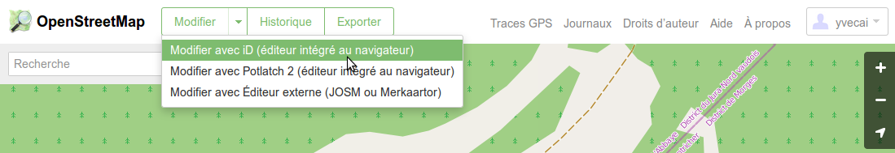
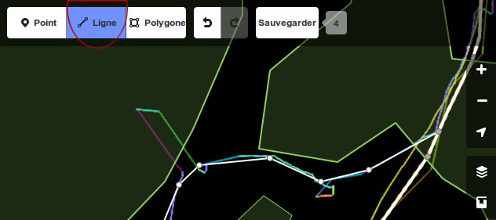
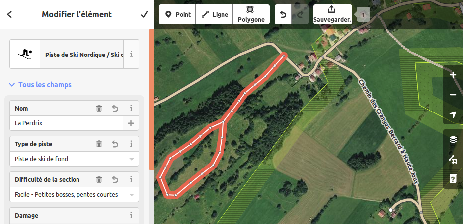
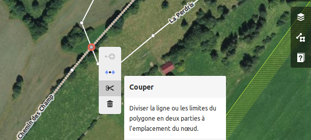

Importer une trace GPX
Tracer la piste
Les attributs (tags)
La couleur des pistes
La difficulté
Modifier un chemin existant
Ajouter une relation
Et ensuite ?
Pour aller plus loin
OpenStreetMap est une carte que vous pouvez éditer vous-même Pour rajouter des pistes de ski de fond, mais pas seulement. En général j’en profite aussi pour rajouter des chemins visibles sur les images aériennes, des refuges, affiner les contours des forêts, etc ...
Il existe plusieurs éditeurs pour modifier OpenStreetMap. Ici, ce pas-à-pas utilise iD, un éditeur en ligne.
L’éditeur iD contient en tutoriel intégré. LearnOsm.org est aussi une bonne source d’information pour débuter avec OpenStreetMap.
Pour commencer
Dans tout les cas, connectez-vous ou créez un compte sur www.openstreetmap.org.
Ensuite, zoomez sur la carte vers l'endroit ou vous allez rajouter votre piste, puis utilisez le menu 'Modifier' en haut pour choisir 'iD'.

Importer une trace GPX
Vous pouvez importer une trace GPX directement avec un glissé-déposé dans la page de iD.

Ce faisant, les autres contributeurs n’auront pas accès à ce fichier GPX. Vous pouvez aussi le verser au projet depuis votre compte OpenStreetMap, cela aidera d’autres contributeurs également.
Tracer la piste
Pour créer un chemin, rien de plus simple : prenez l'outil 'ligne', et repasser sur la trace GPS ou en suivant l'imagerie aérienne.
N'oubliez pas de connecter votre chemin aux chemins déjà existants ! Si la piste suit un chemin déjà existant, voir ci-dessous ‘Modifier un chemin existant’.
Lorsque vous serez content de votre travail, utilisez le bouton 'Sauvegarder' pour le sauver dans OpenStreetMap.
Inutile de faire trop de points, et prenez garde de ne pas suivre toutes les errances de votre GPS : il arrive que celui-ci divague un peu autour de votre position.

Cela ne vous semble pas très précis, mais c'est oublier qu'avec le temps d'autres pourront affiner le tracé grâce à leur propre traces gpx, comme ici :

Notes :
Il y a un bouton annuler qui fonctionne avant de sauvegarder.
Si vous êtes perdus ou que vous pensez avoir fait une bêtise (on en fait tous), n’hésitez pas à demander de l’aide sur le forum français ou les questions / réponses (réponses rapides, même en français)
Les Attributs
Une fois un chemin dessiné, il faut encore lui donner des attributs pour que l’on sache que c’est une piste de ski.
Pour cela, sélectionner votre chemin et taper ‘ski’ sur la zone de recherche à gauche. Plusieurs choix s’affichent, cliquez sur ‘Piste de Ski Nordique’.

Ensuite, c’est très simple, il suffit de renseigner les attributs proposés comme ci-dessous.

La couleur des pistes
Dans OpenStreetMap, on note la difficulté des pistes sur la section considérée : c’est juste le petit virage bien serré et tout le temps glacé qui sera considéré ‘difficile’, pas toute la piste.
Pour renseigner la couleur de balisage, voir ‘Ajouter une relation’ ci-dessous.
Modifier un chemin existant
Souvent,
une piste emprunte un chemin existant qui est déjà présent.
Inutile de repasser dessus.
Par exemple, ci-dessous la piste ‘La
Perdrix’ passe à travers champ, puis emprunte le ‘Chemin Des
Champ’. Cliquez simplement sur le point d'intersection (ou
ajoutez-le s’il n’y est pas), et choisissez l'outil 'ciseaux'.

On peut alors modifier la partie qui nous intéresse du ‘Chemin des Champs’ et lui ajouter les attributs d’une piste de ski de fond dans la zone ‘Tous les attributs’.
Pour le nom, nous allons garder ‘Chemin des Champs’ qui est plus utile que ‘La Perdrix’ pour la plupart des gens.
Pour ajouter le nom de la piste de ski, voir ‘Ajouter une relation’ ci-dessous.
Au final, voici tout les attributs du ‘Chemin des Champs’ :

C’est bien un chemin (tracktype=grade2) qui sera toujours utiles aux tracteurs et au vélos l’été, et aussi une piste de ski (piste:type = nordic), avec une trace de classique et un plan lisse (piste:grooming = classic+skating).
La difficulté
piste:difficulty = novice, easy, intermediate, advanced, expert
Attention, ce tag n'est pas là pour renseigner sur la couleur de la piste de ski de fond, mais pour signaler une section plus ou moins ardue. Vous pouvez utiliser ces définitions :
Novice Piste plate, familiale, aucun effort requis (du genre pas à plus de 2km d'un chocolat chaud).
Easy Piste normale, sections en pente courtes.
Intermediate Pente importante, ou passage étroits en pente. Un peu de sueur nécessaire. N'utiliser que sur les sections concernées.
Advanced Pente importante, avec des passages étroit ou des virage serrés, pistes souvent glacées. N'utiliser que sur les sections concernées.
Expert Pente importante, avec des passage étroit ou des virage serrés, pistes souvent glacées. Terrain dangereux à proximité (falaise). N'utiliser que sur les sections concernées.
Pour renseigner la couleur de balisage, voir ‘Ajouter une relation’ ci-dessous.
Ajouter une relation
Dans OpenStreetMap, un chemin tel que vous l’avez dessiné est un petit bout de parcours. Pour mapper une piste complète comme on en connaît, on regroupe tout les bouts de parcours dans une ‘Relation’. C’est cette relation qui portera l’attribut de la couleur de balisage, le nom de la piste, la longueur officielle, etc ….
Pour créer une nouvelle relation, ou ajouter votre chemin à une relation existante, sélectionnez-le
et cliquez sur le [ + ] en bas du menu de droite en dessous de ‘Toutes les relations’.

Vous pouvez créer une nouvelle relation, ou sélectionner une piste existante pour la compléter.

Si vous créez une nouvelle relation, alors utilisez la zone de recherche pour choisir le type ‘Itinéraire de Ski’.

Comme
pour le chemin, il suffit de renseigner les attributs. Si vous ne les
connaissez pas tous, laissez des blancs.

Pour la couleur, utilisez le nom de la couleur en anglais (blue, green, red, yellow, purple, black, etc … ). Toutes les couleurs sont possibles, il s’agit en fait d’un nom de couleur HTML ou d’un triplet du type ‘#FF0000’. Voir par exemple https://www.w3schools.com/colors/colors_names.asp ou https://html-color-codes.info/ .
En ajoutant plusieurs chemin à une relation, vous allez progressivement voir grandir la ‘liste des membres’.

Et ensuite ?
Et bien voilà ! D’ici quelques jours, vous verrez apparaître la piste sur OpenSnowMap.org. https://openskimap.org, https://slopes.waymarkedtrails.org/ et d’autres, tout comme plusieurs dizaines de milliers de kilomètres de pistes de ski de fond.
Pour aller plus loin
Pour modifier OpenStreetMap, l’éditeur iD est très facile d’accés. Tout y est traduit en français, et bien présenté. Pour aller plus loin, par exemple pour éditer des zones plus importnates ou des chose plus complexes, vous pourrez par example apprécier JOSM, un éditeur bien plus complet.
Notamment, iD est un peu limité pour travailler avec les relations. Aussi, les attributs réels sont masqués par leur description. Ces attributs sont des ‘tags’ et sont accessible par le champ ‘Tout les Attributs’.
Pour en savoir plus sur comment les sports d’hiver sont mappés dans OpenStreetMap, ces trois pages du wiki https://wiki.openstreetmap.org vous dirons tout ce que vous voulez savoir :
https://wiki.openstreetmap.org/wiki/FR:Sports_d%27hiver
https://wiki.openstreetmap.org/wiki/Piste_Maps
https://wiki.openstreetmap.org/wiki/Tag:route%3Dpiste